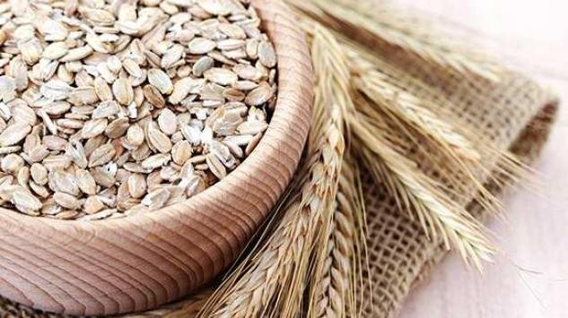

Kardiovaskularne bolesti i holesterol
Kardiovaskularne bolesti su jedne od vodećih uzročnika smrtnosti širom sveta. U Evropi 47% svih smrtnih slučajeva izazvano je upravo kardiovaskularnim bolestima (KVB), a samo u Srbiji kao posledica ovih poremećaja godišnje premine više od 50.000 ljudi.
Postoje faktori rizika na koje se ne može uticati (kao što su pol, starost, nasleđe) ali i oni na koje pojedinac može delovati (fizička neaktivnost, pušenje, visok krvni pritisak, gojaznost, visok LDL-holesterol, nizak HDL-holesterol)
Holesterol može izazvati zakrečenje krvnih sudova, te je od ključne važnosti dostići normalne vrednosti holesterola u krvi. To se ostvaruje delovanjem na holesterol koji se sintetiše u jetri, kao i na holesterol koji se unosi iz hrane.
Za problem regulacije holesterola postoji rešenje, i to prirodno!

Glukani iz ovsa i njihovo dejstvo na zdravlje
Glukani iz ovsa (crne zobi) imaju niz pozitivnih efekata na zdravlje. Američka agencija za hranu i lekove (FDA) izdala je još 1997. godine zdravstvenu izjavu da primena glukana iz ovsa smanjuje nivo holesterola u krvi, a ujedno i rizik od srčanih oboljenja. Slično tome, zdravstvena inicijativa Ujedinjenog Kraljevstva (JHCI) je 2004. godine potvrdila da glukani iz ovsa snižavaju holesterol.
Evropska agencija za bezbednost hrane (EFSA) potvrdila je da primena glukana iz ovsa:
- U dozi od 3 g dnevno redukuje nivo holesterola u krvi i smanjuje rizik od KVB
- Snižava nivo šećera u krvi nakon obroka i povećava osetljivost ćelija na insulin
- Poboljšava funkciju creva uz povećano fekalno pražnjenje
- Može povećati osećaj sitosti, te utiče i na smanjenje telesne mase
Crveni fermentisani pirinač
Crveni fermentisani pirinač ima značajan uticaj na nivo masnoća u krvi. Dobija se fermentacijom belog pirinča uz pomoć plesni Monascus purpureus. Njegova aktivna komponenta, monakolin K, blokira stvaranje holesterola u jetri. Sadrži fitosterole koji smanjuju prelazak holesterola iz hrane u krv, kao i izoflavonoide koji takođe deluju hipolipemički, tj snižavaju nivo masnoća u organizmu.
Brojne kliničke studije dokazale su da crveni fermentisani pirinač snižava nivo LDL-holesterola u krvi za 10-33%, a ujedno i ukupan holesterol i trigliceride. Ne utiče negativno na jetru, bubrege i mišiće, te se može koristiti i kao alternativna terapija kod pacijenata intolerantnih na statine. Evropska agencija za bezbednost hrane (EFSA) potvrdila je da se svakodnevnim uzimanjem crvenog fermentisanog pirinča u kome se nalazi 10 mg monakolina K postiže značajan hipolipemički efekat.
Kako regulisati holesterol prirodnim putem, bez korišćenja supstanci štetnih po zdravlje
Holesterol-Ex Complex® je potpuno prirodan dodatak ishrani, jedinstven na našem tržištu. Proizvodi se u Sloveniji standardizovanim postupkom, praćenjem smernica GMP proizvodnje. Sadrži kombinaciju dve aktivne supstance, za dan i noć:
- 3 g glukana iz ovsa, kesica za dan, rastvori se u čaši vode i popije neposredno pre ručka
- 250 mg crvenog fermentisanog pirinča koji sadrži 10 mg monakolina K, kapsula za noć, pije se uz malo vode uveče pred spavanje

Besplatno savetovalište o zdravlju
Dodatne informacije, iskustva sa pacijentima i savete vezane za zdravlje, lekove i dodatke ishrani možete dobiti pozivom besplatnog savetovališta na broj telefona 011/398-77-47.
Na pozive odgovaraju stručnjaci iz oblasti medicine i farmacije.
Savetovalište radi od 9h-17h svakog radnog dana, po principu kol centra i pozivi se ne naplaćuju dodatno.